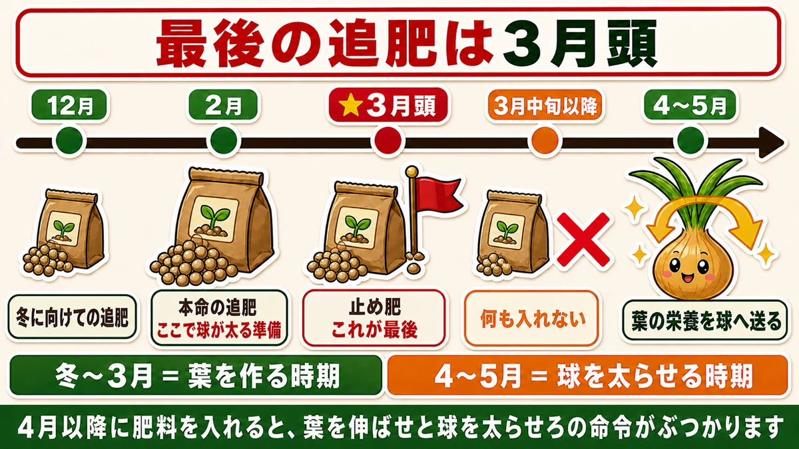
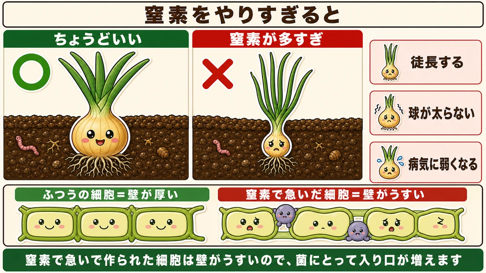
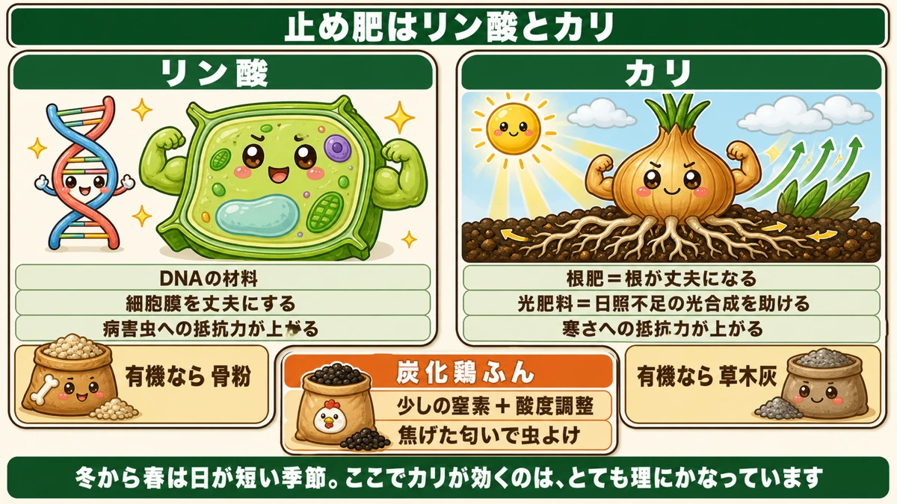
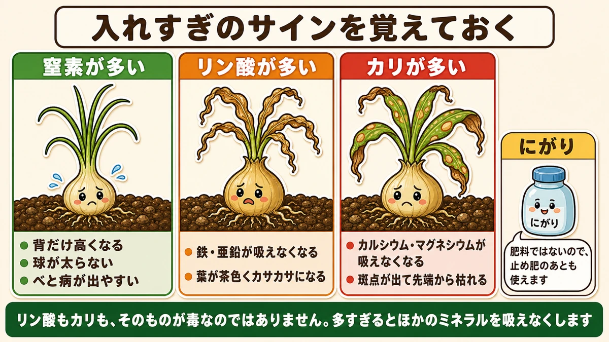

3月に肥料を入れると玉ねぎは太りません🧅 止め肥という考え方
🗨️「玉ねぎが小さいまま終わった」
🗨️「葉ばかり立派で、球が太らない」
🗨️「肥料をあげるほど大きくなると思っていた」
どうも、8150（えいこう）です🌱 家庭菜園歴8年、理科の教員免許を持っていて、有機・無農薬で野菜を育てています。
秋に植えた玉ねぎが、2月から動き出します。
冬のあいだ止まっていた成長が再開して、葉が伸びはじめる。ここからが勝負なのですが、★ここで肥料の入れ方を間違えると、玉ねぎは太りません。
先に、この記事でいちばん言いたいことを言っておきます。
★3月に入ったら、それが最後の追肥です。そしてその肥料は、窒素であってはいけません。
この最後の1回を、止め肥（とめごえ）と言います。名前のとおり、ここで止めるための肥料です☺️

止め肥とは何か
最後の1回、という意味
玉ねぎの追肥は、だいたいこういう流れになります。
- 12月ごろ … 冬に向けての追肥
- ★2月 … 本命の追肥。ここで球が太る準備をする
- ★3月頭 … 止め肥。これが最後
- ★3月中旬以降 … 何も入れない
止め肥という名前には、2つの意味が入っています。ひとつは「肥料をここで止める」という意味。もうひとつは「玉ねぎの葉の成長を止めて、球を太らせるほうへ切り替える」という意味です。
なぜ止めなければいけないのか
玉ねぎは、葉が育つ時期と、球が太る時期が分かれています。
- 冬から3月 … 葉を作る時期
- 4月から5月 … ★葉で作った栄養を、球に送りこむ時期
球が太るのは後半です。そしてそのとき使われるのは、★葉が作りためた栄養です。
つまり、4月以降に肥料を入れると、玉ねぎは困ります。「まだ葉を伸ばせということか」「いや、もう球を太らせる時期なのだが」と、体の中で命令が2つぶつかります。
★結果として、どちらも中途半端になります。
窒素をやりすぎると、こうなる
背だけ高くなって、球が小さい
肥料の三大要素は、窒素・リン酸・カリです。このうち★窒素は、葉と茎を育てる肥料です。
窒素が多すぎると、玉ねぎはこうなります。
- 葉ばかりひょろひょろと背が高くなる（徒長）
- ★球が太らない
- ★病気にかかりやすくなる
- 穫れても、保存がきかない

「肥料をあげるほど大きくなる」というのは、葉物野菜の話です。玉ねぎのように★実や球を太らせる野菜では、途中から逆になります。
なぜ病気に弱くなるのか
窒素が多いと病気に弱くなるのには、理由があります。
窒素で急いで作られた細胞は、★壁がうすくてやわらかいんです。人間でいえば、急に身長だけ伸びて中身が追いついていない状態でしょうか。
菌にとっては、入りやすい入り口が増えたことになります。だから同じ畑の同じ品種でも、窒素を効かせすぎた株からべと病が出ます。
じゃあ、何を入れるのか
リン酸とカリに切り替える
止め肥で入れるのは、★リン酸とカリです。窒素は控えます。
この2つが玉ねぎに何をしてくれるのか、順に見ていきます。

リン酸 ── 細胞の壁を丈夫にする
リン酸は、生きものの体の中でとても大事な役をしています。
★遺伝子（DNA）の構成成分です。
生きものが細胞を増やすときには必ずDNAが要りますから、リン酸がないと体が作れません。呼吸のしくみにも深く関わっています。
そして玉ねぎにとって大事なのが、★細胞膜を丈夫にすることです。
さきほど、窒素が多いと壁がうすくなると書きました。リン酸はその逆で、しっかりした細胞を作らせます。★結果として、病害虫への抵抗力が上がります。
カリ ── 「根肥」であり「光肥料」
カリには、2つの呼び名があります。
ひとつは★根肥（ねごえ）。文字どおり、根を丈夫にする肥料です。根がしっかりすれば、水も養分もよく吸えます。
もうひとつが面白くて、★「光肥料」とも呼ばれます。
カリは★日照が足りないときの光合成をサポートしてくれるんです。冬から春にかけては、日が短くて曇りも多い。玉ねぎにとっては、光が足りない季節です。ここでカリが効くのは、とても理にかなっています。
さらに、★寒さへの抵抗力も上がります。2月3月にはまだ寒波が来ますから、これも助かります。
無農薬・有機なら、こう置き換える
リン酸とカリと言うと、過リン酸石灰や硫酸カリという化学肥料が思い浮かびます。効きは確かなのですが、有機でやるなら別の選択肢があります。
- リン酸 → ★骨粉（こっぷん）
- カリ → ★草木灰（そうもくばい）
- 少しの窒素と酸度調整 → ★炭化鶏ふん
草木灰は、落ち葉や剪定した枝を燃やした灰です。買うこともできますが、自分で作れます。私は畑の隅で燃やした灰をためています。
量の目安
- じわじわ効くタイプ … ★1平米あたり30gくらい
- すぐ効くタイプ … 1平米あたり50gくらい
30gというのは、ひとつかみ強くらいです。多すぎると感じるくらいなら、少ないほうを選んでください。★玉ねぎの失敗は、足りないより多すぎるほうが圧倒的に多いです。
★見落とされがちな落とし穴
リン酸とカリは、土を酸性にする
ここはあまり語られないところです。
★リン酸肥料もカリ肥料も、土を酸性に傾けます。
雨が降るだけでも土は酸性に寄っていくのに、そこへ酸性にする肥料を入れる。玉ねぎは酸性の土が得意ではないので、これが積み重なると育ちが悪くなります。
対策は簡単です。★炭化鶏ふんを少し混ぜること。
炭化鶏ふんはアルカリ度が高いので、★酸度調整と窒素の補給を1つで済ませられます。しかも★焦げたような匂いがして、虫よけにもなります。アンモニア臭はしません。
入れすぎのサインを覚えておく
肥料は、足りないより多いほうが厄介です。何が過剰かによって、出るサインが違います。
★窒素が多い
- 葉ばかり背が高くなる
- 球が太らない
- べと病などが出やすい
★リン酸が多い
- 鉄や亜鉛が吸えなくなる
- ★葉が茶色く、カサカサ・カリカリになる
★カリが多い
- カルシウムとマグネシウムが吸えなくなる
- ★葉に斑点が出て、先端から枯れてくる

面白いのは、リン酸もカリも「そのものが毒になる」わけではないことです。★多すぎると、ほかのミネラルを吸えなくする。栄養の取り合いが起きるわけです。
★肥料は止めても、ミネラルは続けていい
では入れすぎてしまったらどうするか。私が使っているのは★にがりです。
にがりは、豆腐を作るときに使うあれです。マグネシウム、カルシウム、そのほか微量な元素がたっぷり入っています。リン酸やカリの効きすぎで起きる欠乏を、埋めてくれます。
そしてここが大事なところなのですが、★にがりは肥料ではありません。
窒素もリン酸もカリもゼロ。だから、★止め肥のあとでも使えます。「肥料は止める、ミネラルは続ける」という考え方ができます。
うすめて散布するだけなので、玉ねぎ以外にも使えます。私は夏野菜にも同じことをしています。
止め肥のあとに、やること
草を取る
3月から4月にかけて、畑は一気に草が生えてきます。
玉ねぎは★根が浅い野菜です。地表近くに根を広げているので、草に場所を取られると、そのまま負けます。日当たりも取られます。
★止め肥をしたら、次にやるのは草取りだと思ってください。肥料を入れる作業より、こちらのほうが効きます。
マルチを張っていても、植え穴から草が出てきます。手で1本ずつ抜くのが確実です。根が浅いので、道具で削ると玉ねぎの根まで切ってしまいます。
とう立ちした株は、早めに見つける
まれに、花芽が上がってくる株があります。とう立ちです。
葉の中心から、かたい茎がまっすぐ立ち上がってきます。触ると、ほかの葉とちがってゴツゴツしています。
こうなった株は、★球がそれ以上太りません。花に栄養を持っていかれるからです。
見つけたら花芽を摘んでください。球の太りは止まりますが、そのぶん腐りにくくなります。★とう立ちした玉ねぎは保存がきかないので、見つけしだい早めに食べるのが正解です。
とう立ちの原因は、★苗が大きすぎたまま冬に入ったことです。植えるときに大きい苗を選ぶと、これが起きます。来年の反省点としてメモしておいてください。
2月に出る病気のこと
べと病とさび病は、2月中旬から
玉ねぎの病気で多いのは、べと病とさび病です。
出はじめるのは★2月中旬から下旬ごろ。葉に白っぽい、あるいはオレンジ色の斑点が出てきます。
見つけると焦りますよね。私も最初の年、これを見て「もうだめだ」と思いました。
でも、あわてなくていい
実はこの時期、★葉の成長はもう終わりかけています。そして玉が太る時期に入っています。
つまり、病気が出るころには★勝負のかなりの部分が終わっているんです。多少出ても、球はちゃんと太ります。私の畑でも、べと病が出た年に普通の大きさの玉ねぎが穫れました。
★玉ねぎは、虫の薬がほとんど要らない野菜です。無農薬でやるなら、これほど向いている野菜はありません。安心して育ててください。
今日から、できること
この記事の要点
- ★3月に入ったら、それが最後の追肥＝止め肥
- 止め肥のあとは★何も入れない
- 玉ねぎは★3月まで葉を作り、4〜5月に葉の栄養を球へ送る
- ★窒素が多いと徒長し、球が太らず、病気に弱くなる
- 窒素で急いで作った細胞は★壁がうすいので、菌が入りやすい
- 止め肥は★リン酸とカリに切り替える
- リン酸＝★DNAの材料。細胞膜を丈夫にして★病害虫への抵抗力を上げる
- カリ＝★根肥であり★光肥料。日照不足の光合成を助け、寒さにも強くする
- 有機なら リン酸→★骨粉／カリ→★草木灰／窒素と酸度調整→★炭化鶏ふん
- 量は★1平米あたり30gくらい。迷ったら少ないほう
- ★リン酸・カリ肥料は土を酸性にする。炭化鶏ふんで調整する
- 入れすぎのサイン：リン酸→★葉が茶色カサカサ／カリ→★斑点と先端枯れ
- ★にがりは肥料ではないので、止め肥のあとも使える
- べと病・さび病は★2月中旬から。ただしそのころには球の肥大期。あわてない
全部やろうとしなくて大丈夫です。まずはカレンダーの3月頭に「玉ねぎ 最後の追肥」とだけ書いてください。そこに線を引けるだけで、今年の玉ねぎは変わります🧅
次回は、スナップエンドウとそら豆の話。冬を越したあとの、追肥と誘引のタイミングをお話しします
ここまで読んでくださって、ありがとうございました。
炭化鶏ふん
止め肥の主役です。リン酸肥料もカリ肥料も土を酸性に傾けるので、アルカリ度の高い炭化鶏ふんを少し混ぜて調整します。少しの窒素補給と酸度調整が1つで済む。しかも焦げた匂いがして虫よけにもなります。アンモニア臭はしません。
![[商品価格に関しましては、リンクが作成された時点と現時点で情報が変更されている場合がございます。]](https://hbb.afl.rakuten.co.jp/hgb/55e7612a.7de1526b.55e7612b.01a50904/?me_id=1214866&item_id=10002182&pc=https%3A%2F%2Fthumbnail.image.rakuten.co.jp%2F%400_mall%2Fkaju%2Fcabinet%2F00714580%2F03462454%2F07486601%2Fimgrc0071643813.jpg%3F_ex%3D240x240&s=240x240&t=picttext "[商品価格に関しましては、リンクが作成された時点と現時点で情報が変更されている場合がございます。]")

カキ殻石灰
玉ねぎは酸性の土が得意ではありません。リン酸・カリを入れると土が酸性に寄っていくので、その分を戻しておきます。カルシウムも入っているので、カリの効きすぎで起きるカルシウム欠乏の予防にもなります。
![[商品価格に関しましては、リンクが作成された時点と現時点で情報が変更されている場合がございます。]](https://hbb.afl.rakuten.co.jp/hgb/56d21b6a.c19127f6.56d21b6b.c5473e84/?me_id=1258048&item_id=10000067&pc=https%3A%2F%2Fthumbnail.image.rakuten.co.jp%2F%400_mall%2Fkaneashop%2Fcabinet%2F12084383%2F12419790%2Fimgrc0108924525.jpg%3F_ex%3D240x240&s=240x240&t=picttext "[商品価格に関しましては、リンクが作成された時点と現時点で情報が変更されている場合がございます。]")
収穫ハサミ
とう立ちした株を見つけたら、花芽を摘みます。中心からかたい茎がまっすぐ立ち上がってきて、触るとゴツゴツしている。こうなった株は球がそれ以上太らないので、早めに食べてください。
![[商品価格に関しましては、リンクが作成された時点と現時点で情報が変更されている場合がございます。]](https://hbb.afl.rakuten.co.jp/hgb/56d22030.def85fa7.56d22031.b89fde86/?me_id=1250472&item_id=10022339&pc=https%3A%2F%2Fthumbnail.image.rakuten.co.jp%2F%400_mall%2Fplantz%2Fcabinet%2F01%2Ft-13.jpg%3F_ex%3D240x240&s=240x240&t=picttext "[商品価格に関しましては、リンクが作成された時点と現時点で情報が変更されている場合がございます。]")